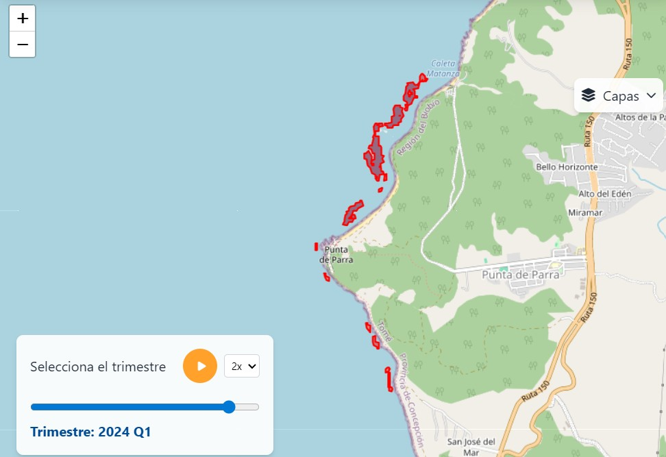
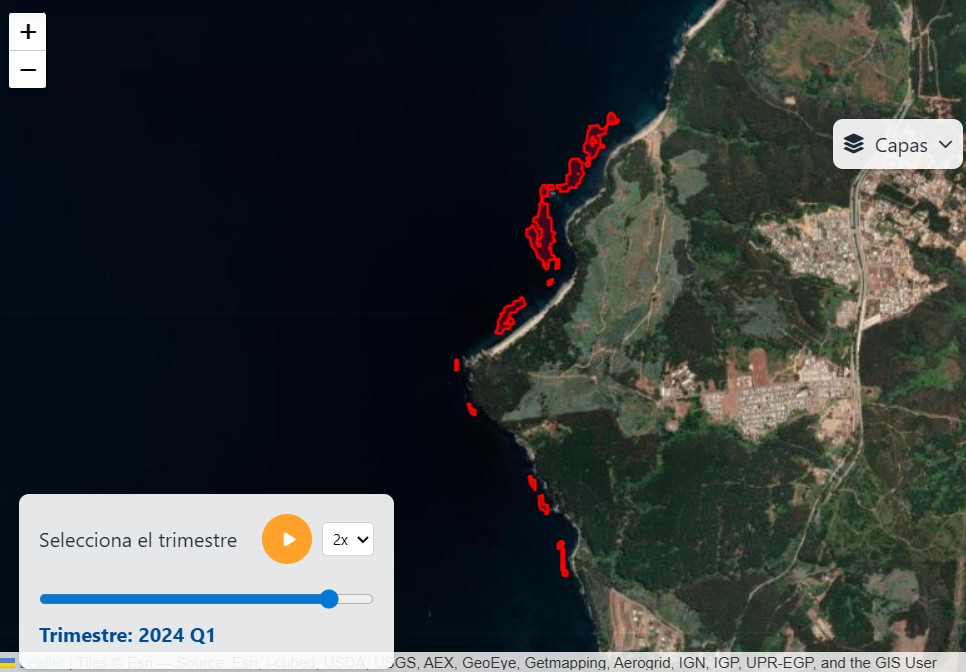

¿Qué es Blue Alert Chile?
"Blue Alert es una iniciativa que apunta al desarrollo tecnológico, libre y transparente. Enfocados en teledetección y análisis estadísticos, para el monitoreo de sistemas ecológicos, el estudio de sus dinámicas y la transferencia de este conocimiento para su manejo y conservación."
Monitoreo remoto espacializados en sistemas ecológicos
Desarrollamos metodologías específicas en la obtención de imágenes y su análisis espectral, para clasificar, georreferenciar y reconstruir series temporales.
- Estudiar sus dinámicas espacio temporales. Analizar tendencias, productividad y vulnerabilidad de sistemas ecológicos
- Nuestra intención es tributar al ordenamiento territorial, a través del reporte de observaciones capacez de dirigir la toma de decisiones
- Buscamos desarrollar modelos predictivos que nos permitan informar, por ejemplo, de alertas tempranas ante cambios significativos


Análisis estadisticos enfocado en sistemas ecologicos
Modelamos relaciones espacio-temporales con la capacidad de integrar enfoques estocásticos, genéticos y ambientales
- Incluye el manejo de grandes bases de datos, incluyendo datos en grandes extensiones espaciales replicadas en el tiempo
- Hacemos análisis comparativos a nivel de individuos, poblaciones, comunidades y ambientales.
- Posibilidad de integrar fuentes de datos geneticas como microsatélites, SNPs, DNA ambiental y datos metagenómicos.

Nuestros Servicios
Monitoreo Satelital
Tecnología avanzada para el seguimiento espacio temporal de sistemas ecológicos, mediante imágenes satelitales. Con especial énfasis en sistemas costeros y marinos.
Análisis estadísticos
Estudio de las dinámicas de sistemas ecológicos, mediante procesamiento de datos y su análisis. Incluyen acercamientos frecuentistas y bayesianos, análisis paramétricos y no paramétricos, según las necesidades del estudio y la naturaleza de los datos.
Transferencia tecnologica
Queremos transferir el conocimiento a traves de cursos, capacitaciones y desarrollo tecnológico.
Nuestros Principios
Colaboración
Fomentamos colaboración y trabajo en equipo. Valoramos el equilibrio colectivo, incentivando inclusión, intercambio de conocimiento, creación de redes de apoyo comunitarias y alianzas público-privadas.
Transparencia
Seguimos principios de ciencia libre y replicable, ofreciendo información confiable y transparente para una toma de decisiones fundamentadas.
Conservación Marina
Facilitamos el monitoreo remoto de bosques de macroalgas flotantes, aceptando su importancia ecológica, para la conservación de los ecosistemas marino costeros.
Síguenos en redes sociales: